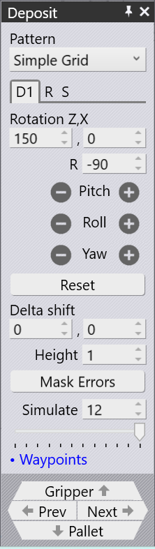
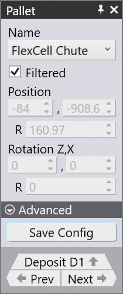
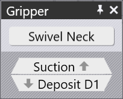
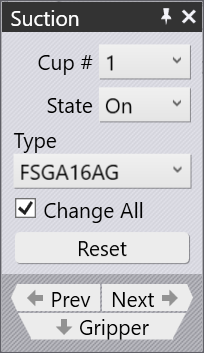

Fertigteilablage
Nach Abschluss des Biegevorgangs wird das fertige Teil auf einer Palette oder einem Förderband abgelegt oder in einen Korb abgeworfen. Verschiedene Einstellungen steuern diesen Ablagevorgang:
-
Die Position, der Typ und die Ausrichtung der Ablagepalette.
-
Das Raster der Teile auf der Palette (Zeilen, Spalten und Lagen).
-
Die Ausrichtung des Teils auf der Palette.
Diese Einstellungen werden hauptsächlich über das Ablage-Panel und das Palette-Panel gesteuert, die den Ablagevorgang unterstützen. Die Panels werden im Folgenden erläutert. Sie sind alle über Auf-/Ab-Navigationslinks miteinander verbunden.
Panels

Ablagepanel
Das Panel Ablage steuert die wichtigsten Einstellungen zum Ablegen eines Teils auf einer Palette, in einem Korb oder auf einem Förderband. Öffnen Sie das Panel, indem Sie im Biegenavigator auf eine Zelle wie D1 oder auf eines der fertigen Teile auf der Ablagepalette klicken.
-
Muster: Klicken Sie auf das Pull-down-Menü Muster, um den Ablagemustertyp auszuwählen. Für die Ablage von Teilen stehen die folgenden drei Muster zur Verfügung:
-
Einfaches Raster: Dieses Muster wird am häufigsten verwendet. Dabei werden die Teile einfach in einem rechteckigen Raster auf der Palette gestapelt.
-
In Korb ablegen: Mit diesem Muster werden kleine Teile mithilfe des mechanischen Greifers in einen Sammelkorb abgelegt.
-
Förderband: Mit diesem Muster werden Teile auf einem Teileförderband abgelegt. Diese Option ist unverzichtbar, wenn lange, schmale Teile auf einem Förderband abgelegt werden.
-
-
Ablage-Tabs: Das Panel Ablage enthält mehrere Tabs, mit denen Sie verschiedene Aspekte des Ablagevorgangs konfigurieren können. Weitere Informationen finden Sie unter Einstellungen für Teil 1 (D1), Wiederholraster (R) und Ablagesequenz (S).
-
Wegpunkte: Dieser Link öffnet das Panel des Wegpunkteditors, in dem die Roboterbahn während des Ablegens feinjustiert werden kann.
-
Greifer: Mit dieser Schaltfläche öffnen Sie das Panel Greifer und können die Greifereinstellungen für den Ablagevorgang konfigurieren. Diese Schaltfläche ist nur verfügbar, wenn für den Ablagevorgang das Muster „Einfaches Raster“ oder „Förderband“ verwendet wird.
-
Zurück und Weiter: Mit diesen Schaltflächen wechseln Sie zum vorherigen oder nächsten Bedienfeld.
-
Palette: Mit dieser Schaltfläche öffnen Sie das Palettenpanel und können die Einstellungen für die Ablagepalette konfigurieren.

Palettenpanel
Verwenden Sie das Panel Palette, um eine Ablagepalette auszuwählen und ihre Position in der Zelle festzulegen. Klicken Sie auf die Aufnahmepalette, um das Panel Palette zu öffnen.
-
Name: Listet die Ablagepaletten auf. Deaktivieren Sie die Checkbox Gefiltert, um alle verfügbaren Paletten anzuzeigen.
-
Position Z, X, R: Diese Felder zeigen die Position der Ablagepalette im Maschinenkoordinatensystem an. Sie sind nicht bearbeitbar, da die Palettenposition voreingestellt ist.
-
Drehung Z, X, R: Diese Felder zeigen die Drehung der Ablagepalette im Maschinenkoordinatensystem an. Sie sind nicht bearbeitbar, da die Palettendrehung voreingestellt ist.
-
Konfiguration speichern: Klicken Sie auf das Pull-down-Menü Erweitert, um diese Option anzuzeigen. Damit speichern Sie die aktuelle Zellkonfiguration als Standard für diese Maschine.
-
Zurück / Weiter: Wechseln Sie zur vorherigen oder nächsten Palette in der Zelle.
-
Ablage D1: Öffnet das Panel Ablage.
Greiferpanel

Mit dem Panel Greifer können Sie verschiedene Einstellungen für den Greifer konfigurieren,
der beim Ablagevorgang verwendet wird. Klicken Sie auf den Greifer, um das Panel Greifer zu
öffnen, oder klicken Sie im Panel Ablage auf das Greifer--Symbol,
um zum Panel Greifer zu wechseln.
-
Schwenkbarer Greiferhals: Mit dieser Option lässt sich der Greiferhals um 180° drehen.
| Das Panel Greifer und das Saugerpanel sind nur verfügbar, wenn für den Ablagevorgang das Muster „Einfaches Raster“ oder „Förderband“ gewählt ist. |
Saugerpanel

Verwenden Sie das Saugerpanel, um die Anordnung der Saugnäpfe am Greifer zu konfigurieren. Klicken Sie auf einen Saugnapf, um das Panel zu öffnen, oder verwenden Sie den Link Sauger im Greiferpanel.
-
Sauger-Nr.: Wählt einen Saugnapf zur Bearbeitung aus.
-
Status: Legt für jeden Saugnapf den Status Ein oder Entfernt fest.
-
Ein: Standardzustand. Der Saugnapf ist an die Vakuumleitung angeschlossen und trägt zur Hubkraft bei.
-
Entfernt: Der Saugnapf wird physisch aus dem Rahmen entfernt. Er kann dann weder Hubkraft erzeugen noch eine Kollision verursachen. Dies ist nützlich, wenn ein Saugnapf über einem umgeformten Bereich positioniert wird oder mit der Matrize kollidieren würde.
-
-
Typ: Ändert den Typ des Saugnapfs. Standardmäßig wird der Typ aller Saugnäpfe gemeinsam geändert. Deaktivieren Sie Alle ändern, um einzelne Saugnäpfe zu ändern. Alle Saugnäpfe an einem Greiferrahmen müssen dieselbe Arbeitshöhe haben.
-
Zurücksetzen: Setzt alle Saugnäpfe auf ihren Standardtyp zurück und aktiviert sie alle.
-
Zurück / Weiter: Wechselt zum vorherigen oder nächsten Saugnapf. Der ausgewählte Saugnapf ist blau hervorgehoben.
-
Greifer: Öffnet das Greiferpanel.